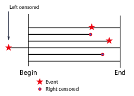

# ============================================================
# FB2NEP bootstrap cell (works both locally and in Colab)
#
# What this cell does:
# - Ensures that we are inside the fb2nep-epi repository.
# - In Colab: clones the repository from GitHub if necessary.
# - Loads and runs scripts/bootstrap.py.
# - Makes the main dataset available as the variable `df`.
#
# Important:
# - You may see messages printed below (for example from pip
# or from the bootstrap script). This is expected.
# - You may also see WARNINGS (often in yellow). In most cases
# these are harmless and can be ignored for this module.
# - The main thing to watch for is a red error traceback
# (for example FileNotFoundError, ModuleNotFoundError).
# If that happens, please re-run this cell first. If the
# error persists, ask for help.
# ============================================================
import os
import sys
import pathlib
import subprocess
import importlib.util
# ------------------------------------------------------------
# Configuration: repository location and URL
# ------------------------------------------------------------
# REPO_URL: address of the GitHub repository.
# REPO_DIR: folder name that will be created when cloning.
REPO_URL = "https://github.com/ggkuhnle/fb2nep-epi.git"
REPO_DIR = "fb2nep-epi"
# ------------------------------------------------------------
# 1. Ensure we are inside the fb2nep-epi repository
# ------------------------------------------------------------
# In local Jupyter, you may already be inside the repository,
# for example in fb2nep-epi/notebooks.
#
# In Colab, the default working directory is /content, so
# we need to clone the repository into /content/fb2nep-epi
# and then change into that folder.
cwd = pathlib.Path.cwd()
# Case A: we are already in the repository (scripts/bootstrap.py exists here)
if (cwd / "scripts" / "bootstrap.py").is_file():
repo_root = cwd
# Case B: we are outside the repository (for example in Colab)
else:
repo_root = cwd / REPO_DIR
# Clone the repository if it is not present yet
if not repo_root.is_dir():
print(f"Cloning repository from {REPO_URL} into {repo_root} ...")
subprocess.run(["git", "clone", REPO_URL, str(repo_root)], check=True)
else:
print(f"Using existing repository at {repo_root}")
# Change the working directory to the repository root
os.chdir(repo_root)
repo_root = pathlib.Path.cwd()
print(f"Repository root set to: {repo_root}")
# ------------------------------------------------------------
# 2. Load scripts/bootstrap.py as a module and call init()
# ------------------------------------------------------------
# The shared bootstrap script contains all logic to:
# - Ensure that required Python packages are installed.
# - Ensure that the synthetic dataset exists (and generate it
# if needed).
# - Load the dataset into a pandas DataFrame.
#
# We load the script as a normal Python module (fb2nep_bootstrap)
# and then call its init() function.
bootstrap_path = repo_root / "scripts" / "bootstrap.py"
if not bootstrap_path.is_file():
raise FileNotFoundError(
f"Could not find {bootstrap_path}. "
"Please check that the fb2nep-epi repository structure is intact."
)
# Create a module specification from the file
spec = importlib.util.spec_from_file_location("fb2nep_bootstrap", bootstrap_path)
bootstrap = importlib.util.module_from_spec(spec)
sys.modules["fb2nep_bootstrap"] = bootstrap
# Execute the bootstrap script in the context of this module
spec.loader.exec_module(bootstrap)
# The init() function is defined in scripts/bootstrap.py.
# It returns:
# - df : the main synthetic cohort as a pandas DataFrame.
# - CTX : a small context object with paths, flags and settings.
df, CTX = bootstrap.init()
# Optionally expose a few additional useful variables from the
# bootstrap module (if they exist). These are not essential for
# most analyses, but can be helpful for advanced use.
for name in ["CSV_REL", "REPO_NAME", "REPO_URL", "IN_COLAB"]:
if hasattr(bootstrap, name):
globals()[name] = getattr(bootstrap, name)
print("Bootstrap completed successfully.")
print("The main dataset is available as the variable `df`.")
print("The context object is available as `CTX`.")1.08 – Regression and Modelling: Foundations
Version 0.0.5
This workbook introduces the foundations of regression modelling in nutritional epidemiology.
We will focus on:
- Theoretical background to regression.
- Linear, logistic, and Cox proportional hazards regression.
- Quantile regression.
- Model assumptions and diagnostics.
- Non-linear models (polynomials and splines).
- Interpretation of coefficients (β, OR, RR, HR).
- Generating predictions from fitted models.
All analyses use the synthetic FB2NEP cohort.
Run the first code cell to configure the repository and load the dataset.
"""Import required libraries for regression and survival analysis.
This cell:
- Imports core numerical and plotting libraries.
- Imports regression tools (statsmodels, scipy).
- Imports patsy for spline functions.
- Ensures that the 'lifelines' package is available (local Jupyter and Colab).
"""
# Core data handling and plotting
import pandas as pd
import numpy as np
import matplotlib.pyplot as plt
# Linear and generalised linear models
import statsmodels.formula.api as smf
import statsmodels.api as sm
# Statistical utilities (for example, Q–Q plots)
from scipy import stats
# Patsy for design matrices and spline terms.
# 'cr' is the cubic regression spline used in restricted cubic spline examples.
from patsy import dmatrix, dmatrices, cr
# For neat display of tables in notebooks
from IPython.display import display
# Helper function to ensure 'lifelines' is installed.
# This is defined in scripts/helpers_tables.py for the FB2NEP materials.
from scripts.helpers_tables import ensure_lifelines
# Ensure that 'lifelines' is available, installing it if needed.
lifelines = ensure_lifelines()
# Import survival analysis tools from lifelines:
# - KaplanMeierFitter for Kaplan–Meier curves
# - CoxPHFitter for Cox proportional hazards models
from lifelines import KaplanMeierFitter, CoxPHFitter"""Inspect the first few rows and the variable types.
This provides a quick overview of the FB2NEP cohort and its variables.
"""
display(df.head())
display(df.dtypes.head(30))1 1. What regression is
Regression modelling is a central tool in epidemiology. In its most basic form, regression estimates the expected value of an outcome variable given one or more predictors:
\[ E(Y \mid X_1, X_2, \ldots, X_p). \]
The regression model describes a systematic component (the part explained by the predictors) and a random component (the unexplained variability, or error term).
In this workbook we will:
- Start with simple regression models.
- Extend to different outcome types.
- Introduce models for non-linear relationships and for different parts of the outcome distribution.
1.1 1.1 Prediction versus inference
Regression can be used for different purposes:
- Prediction: obtain accurate predictions \(\hat{Y}\) for new individuals.
- Inference: estimate and interpret the parameters (for example, β, OR, HR) and their uncertainty.
In nutritional epidemiology we are often interested primarily in inference:
- How much higher is blood pressure, on average, in individuals with high sodium intake?
- What is the hazard ratio for cardiovascular disease per 5 kg/m² higher BMI?
Prediction is also important, for example when developing risk scores, but the focus in this workbook is on understanding parameters and assumptions.
Simple visual example: BMI and age.
Here we:
- Create a scatter plot of BMI against age.
- Add rudimentary formatting to make the figure readable.
We do not fit a model yet; this is purely descriptive.
fig, ax = plt.subplots(figsize=(6, 4))
ax.scatter(df["age"], df["BMI"], alpha=0.3, edgecolor="none")
ax.set_xlabel("Age (years)")
ax.set_ylabel("Body mass index (kg/m²)")
ax.set_title("Scatter plot of BMI against age (FB2NEP cohort)")
plt.tight_layout()
plt.show()1.2 Interpreting the scatter plot
This plot shows each participant’s body mass index (BMI) against age.
When inspecting such a plot, it is useful to consider:
- Overall pattern: does BMI tend to increase, decrease, or stay roughly constant with age?
- Linearity: does a straight line seem reasonable, or is there evidence of curvature?
- Spread: is the variability of BMI similar across ages, or does it increase or decrease?
- Outliers or subgroups: are there points or clusters that look unusual?
In later sections we will use regression models to describe this relationship more formally. For now, focus on whether a simple linear model appears plausible as a first approximation.
2 2. Types of regression models
In this section we introduce three commonly used regression models in epidemiology:
- Linear regression for continuous outcomes.
- Logistic regression for binary outcomes.
- Cox proportional hazards regression for time-to-event outcomes.
The underlying idea is similar in all three cases: we model how the expected outcome (mean, probability, hazard) changes with predictors.
2.1 2.1 Linear regression
Linear regression models a continuous outcome as a linear function of predictors:
\[ Y = \beta_0 + \beta_1 X_1 + \beta_2 X_2 + \cdots + \beta_p X_p + \varepsilon. \]
- $ Y $ is a continuous variable (for example, BMI or systolic blood pressure).
- $ X_1, X_2, , X_p $ are predictors (for example, age, sex, smoking status).
- $ $ is a random error term.
The key quantity is the conditional mean:
\[ E(Y \mid X_1, \ldots, X_p) = \beta_0 + \beta_1 X_1 + \cdots + \beta_p X_p. \]
The coefficient $ _j $ describes the expected difference in Y associated with a one-unit difference in ( X_j ), holding the other predictors constant.
Linear regression example: BMI on age (and sex).
We will:
- Fit a simple linear regression model.
- Inspect the summary output.
- Overlay the fitted line on a scatter plot.
Assumptions and diagnostics will be discussed later; for now the aim is to see the basic mechanics.
For this example we assume the following variables exist: - ‘bmi’: continuous outcome - ‘age’: continuous predictor - ‘sex’: binary or categorical (for example ‘Male’, ‘Female’)
import statsmodels.api as sm
import statsmodels.formula.api as smf
# Fit an ordinary least squares (OLS) model using a formula interface.
model_lin = smf.ols("BMI ~ age + C(sex)", data=df)
result_lin = model_lin.fit()
# Display a standard model summary.
result_lin.summary()2.2 Interpreting the linear regression output
The model estimates the association between age, sex, and BMI. The key points are:
Age is positively associated with BMI.
- The coefficient for age is 0.071.
- For each additional year of age, the mean BMI is estimated to be 0.071 kg/m² higher, on average, holding sex constant.
- The 95 % confidence interval (0.065 to 0.077) indicates a precise estimate.
- The coefficient for age is 0.071.
Sex shows no clear association with BMI in this model.
- The coefficient for
C(sex)[T.M]is 0.055 with a P-value of 0.335.
- Mean BMI does not differ materially between men and women in this dataset.
- The coefficient for
Intercept (≈ 23.0) represents the estimated mean BMI for the reference group (women) at age 0.
This has no substantive interpretation but is necessary for the model.R² = 0.023: age and sex explain about 2.3 % of the variability in BMI.
This is typical in epidemiological cohorts where many factors influence BMI.Model significance
- The F-statistic is large with P < 0.001, indicating that the model explains more variation than a null model with no predictors.
- The small R² emphasises that statistical significance does not necessarily imply a strong association.
- The F-statistic is large with P < 0.001, indicating that the model explains more variation than a null model with no predictors.
Residual diagnostics
- Skewness ≈ 0 and kurtosis ≈ 2.94 suggest residuals close to normality.
- Durbin–Watson ≈ 2.0 indicates no meaningful autocorrelation (expected for cross-sectional data).
- The Omnibus and Jarque–Bera tests are statistically significant, but with large samples even very small deviations from normality yield significance.
- Skewness ≈ 0 and kurtosis ≈ 2.94 suggest residuals close to normality.
Summary:
Age is strongly and positively associated with BMI in the FB2NEP cohort, but age and sex together explain only a modest proportion of the variability in BMI.
2.3 Plot the fitted regression line for BMI ~ age.
For visual simplicity we will:
- Restrict to one sex (for example, ‘Female’).
- Fit a simple model with age as the only predictor in this subgroup.
- Overlay the fitted line on the scatter plot.
This is purely for illustration.
# Subset to one sex (adjust the label if your dataset uses different coding).
df_female = df[df["sex"] == "F"].copy()
model_lin_f = smf.ols("BMI ~ age", data=df_female)
result_lin_f = model_lin_f.fit()
# Create a grid of ages spanning the observed range.
age_grid = np.linspace(df_female["age"].min(), df_female["age"].max(), 100)
pred_df = pd.DataFrame({"age": age_grid})
pred_df["bmi_hat"] = result_lin_f.predict(pred_df)
fig, ax = plt.subplots(figsize=(6, 4))
ax.scatter(df_female["age"], df_female["BMI"], alpha=0.3, edgecolor="none", label="Observed BMI")
ax.plot(pred_df["age"], pred_df["bmi_hat"], linewidth=2, label="Fitted line")
ax.set_xlabel("Age (years)")
ax.set_ylabel("Body mass index (kg/m²)")
ax.set_title("Linear regression: BMI ~ age (example subset)")
ax.legend()
plt.tight_layout()
plt.show()2.4 2.2 Logistic regression
Logistic regression is used when the outcome is binary, for example the presence or absence of hypertension.
Let $ Y {0, 1} $ with $ Y = 1 $ indicating that the event (for example, hypertension) is present. The logistic model specifies the log odds of the event as a linear function of predictors:
\[ \log\left(\frac{p}{1 - p}\right) = \beta_0 + \beta_1 X_1 + \cdots + \beta_p X_p, \]
where $ p = P(Y = 1 X_1, , X_p) $.
If we exponentiate a coefficient $ _j $, we obtain an odds ratio:
\[ \exp(\beta_j) \]
which describes the multiplicative change in the odds of the outcome associated with a one-unit increase in $ X_j $, holding other predictors constant.
2.4.1 Understanding the logit transformation
Probabilities are restricted to the interval (0, 1). A linear model of the form
\[ p = \beta_0 + \beta_1 X \]
is unsuitable because it can produce values outside this range.
To use linear predictors sensibly, we transform the probability using the logit:
\[ \text{logit}(p) = \log\left(\frac{p}{1-p}\right). \]
The logit has two key properties:
- It maps probabilities $ p (0, 1) $ to the whole real line $ (-, +) $.
- It is strictly increasing: higher probability corresponds to higher logit.
By modelling the logit of the probability as a linear function of predictors, logistic regression ensures that all predicted values are valid probabilities when we convert back using the inverse-logit:
\[ p = \frac{\exp(\eta)}{1 + \exp(\eta)}, \qquad \eta = \beta_0 + \beta_1 X_1 + \cdots + \beta_p X_p. \]
This connection between the probability ( p ), the logit, and the linear predictor is the basis of logistic regression.
"""Visualising the logit transformation.
We:
- Create a grid of probabilities between 0 and 1.
- Compute logit(p) = log(p / (1 - p)) for each value.
- Plot logit(p) against p.
This illustrates how the logit maps probabilities in (0, 1) to the whole real line.
"""
# Avoid exactly 0 and 1 to prevent division by zero in log(p / (1 - p))
p = np.linspace(0.001, 0.999, 200)
logit_p = np.log(p / (1 - p))
fig, ax = plt.subplots(figsize=(6, 4))
ax.plot(p, logit_p)
ax.set_xlabel("Probability p")
ax.set_ylabel("logit(p) = log(p / (1 - p))")
ax.set_title("The logit transformation")
# Add a horizontal line at 0 to highlight p = 0.5 (where odds = 1)
ax.axhline(0, linewidth=1)
plt.tight_layout()
plt.show()2.4.2 Interpreting the logit plot
- As ( p ), logit(p) goes to −∞.
- As ( p ), logit(p) goes to +∞.
- At ( p = 0.5 ), logit(p) = 0 (odds = 1:1).
This explains why modelling the logit as a linear function of predictors still gives valid probabilities once we apply the inverse-logit transformation.
Logistic regression example: hypertension on BMI and age.
We assume there is a binary outcome variable ‘hypertension’ coded 0/1.
The model:
logit(P(hypertension = 1)) = β0 + β1 * BMI + β2 * age + β3 * sexWe fit the model and inspect the estimated odds ratios.
2.4.3 Creating a binary hypertension variable
Logistic regression requires a binary outcome. In this workbook we define a variable hypertension as:
- 1 if the participant has systolic blood pressure ≥ 140 mmHg, or
- diastolic blood pressure ≥ 90 mmHg, or
- is on antihypertensive medication,
and 0 otherwise.
This is one of several possible definitions; different studies may use slightly different cut-offs. The important point here is to obtain a clearly defined 0/1 variable.
"""Create a binary hypertension variable for logistic regression.
Definition (example):
- Hypertension = 1 if sbp ≥ 140 mmHg or dbp ≥ 90 mmHg or on blood pressure medication.
- Hypertension = 0 otherwise.
Adjust the variable names and thresholds if your dataset uses different coding.
"""
# Start with threshold-based hypertension
hypertension = (df["SBP"] >= 140)
df["hypertension"] = hypertension.astype(int)
df["hypertension"].value_counts()Logistic regression example: hypertension on BMI and age.
We assume there is a binary outcome variable ‘hypertension’ coded 0/1.
The model:
logit(P(hypertension = 1)) = β0 + β1 * BMI + β2 * age + β3 * sexWe fit the model and inspect the estimated odds ratios.
# Fit logistic regression using the formula interface.
model_log = smf.logit("hypertension ~ BMI + age + C(sex)", data=df)
result_log = model_log.fit()
# Display the model summary.
display(result_log.summary())
2.5 Interpreting the logistic regression output
The table above shows the results of a logistic regression model in which hypertension (0/1) is regressed on sex, BMI, and age. Logistic regression models the log odds of the outcome, so the coefficients in the summary are expressed on the logit scale.
Key elements of the output are:
Coefficients (coef):
These represent changes in the log odds of hypertension per unit change in the predictor, holding the other variables constant. They are not directly intuitive and are normally exponentiated to obtain more interpretable effect measures.Standard errors and z-values:
Used to assess whether the coefficients differ meaningfully from zero on the log-odds scale. With large samples, even small effects can achieve small P-values.P-values:
Indicate evidence against the null hypothesis that a coefficient is zero on the log-odds scale. Here, BMI and age show very small P-values, suggesting clear associations.Confidence intervals ([0.025, 0.975]):
These are 95 % confidence intervals for the log-odds coefficients.Pseudo-R² (0.024):
Indicates that the model explains about 2.4 % of the variation in the log odds. This is typical for epidemiological data, where many factors contribute to hypertension.LL-Null and LL:
The log-likelihood values for the intercept-only model and for the full model respectively. The likelihood ratio test (LLR P-value) shows that the model provides a significantly better fit than an intercept-only model.
Because the coefficients are expressed on the log-odds scale, they are not directly interpretable in terms of risk or probability. In the next step we convert them into odds ratios, which provide a more intuitive multiplicative measure of association.
# Extract odds ratios and 95 % confidence intervals.
params = result_log.params
conf = result_log.conf_int()
or_table = pd.DataFrame({
"OR": np.exp(params),
"CI_lower": np.exp(conf[0]),
"CI_upper": np.exp(conf[1]),
})
or_table2.6 From log-odds coefficients to odds ratios
Logistic regression estimates effects on the log odds scale:
\[ \log\left(\frac{p}{1 - p}\right) = \beta_0 + \beta_1 X_1 + \cdots + \beta_p X_p. \]
A coefficient \(\beta_j\) therefore represents the expected change in the log odds of the outcome per one-unit change in \(X_j\).
To obtain an interpretable effect measure we exponentiate the coefficient:
\[ \exp(\beta_j). \]
This converts the change in log odds into a multiplicative change in the odds of the outcome:
- \(\exp(\beta_j) = 1\) → no association.
- \(\exp(\beta_j) > 1\) → higher odds of the outcome.
- \(\exp(\beta_j) < 1\) → lower odds of the outcome.
These exponentiated values are known as odds ratios (ORs).
For example, if the coefficient for BMI is 0.059, then:
\[ \exp(0.059) \approx 1.06, \]
meaning that each additional unit of BMI is associated with approximately 6 % higher odds of hypertension, holding other variables constant.
2.7 Predicted probabilities from the logistic model
We can use the fitted logistic regression model to obtain predicted probabilities of hypertension for specific combinations of predictors.
In this section we:
- Plot the predicted probability of hypertension across BMI with a 95 % confidence band for a reference profile (for example, age 60 years, sex = F).
- Plot predicted probabilities across BMI for several different ages to illustrate how the age effect shifts the whole curve.
In both cases, age and sex are treated as fixed at chosen values, so any changes in the curve reflect only the association with BMI (and age, where varied explicitly).
"""Predicted probability of hypertension across BMI with 95 % confidence band.
We:
- Fix age and sex at reference values.
- Vary BMI from the 5th to the 95th percentile.
- Use the fitted logistic model to compute:
- the linear predictor (η),
- its standard error,
- a 95 % confidence interval for η,
- and then transform these to probabilities using the inverse logit.
"""
import patsy
# Reference profile
age_ref = 60
sex_ref = "F" # adjust if coding is different
# BMI grid
bmi_grid = np.linspace(
df["BMI"].quantile(0.05),
df["BMI"].quantile(0.95),
100
)
pred_df = pd.DataFrame({
"BMI": bmi_grid,
"age": age_ref,
"sex": sex_ref,
})
# Build the design matrix for the new data using the same formula structure
formula = "hypertension ~ BMI + age + C(sex)"
design_info = result_log.model.data.design_info
X_new = patsy.build_design_matrices([design_info], pred_df)[0]
# Parameter estimates and covariance matrix
beta_hat = result_log.params.values
cov_beta = result_log.cov_params().values
# Linear predictor η = Xβ
eta_hat = X_new @ beta_hat
# Standard error of η: sqrt(diag(X cov_beta X^T))
var_eta = np.einsum("ij,jk,ik->i", X_new, cov_beta, X_new)
se_eta = np.sqrt(var_eta)
# 95 % CI on the η (log-odds) scale
z = 1.96
eta_lower = eta_hat - z * se_eta
eta_upper = eta_hat + z * se_eta
# Inverse logit to get probabilities and CIs
def inv_logit(x):
return np.exp(x) / (1 + np.exp(x))
p_hat = inv_logit(eta_hat)
p_lower = inv_logit(eta_lower)
p_upper = inv_logit(eta_upper)
fig, ax = plt.subplots(figsize=(6, 4))
ax.plot(bmi_grid, p_hat, linewidth=2, label="Predicted probability")
ax.fill_between(bmi_grid, p_lower, p_upper, alpha=0.2, label="95 % CI")
ax.set_xlabel("Body mass index (kg/m²)")
ax.set_ylabel("Predicted probability of hypertension")
ax.set_title(f"Hypertension vs BMI (age = {age_ref}, sex = {sex_ref})")
ax.legend()
plt.tight_layout()
plt.show()You can change age and sex in the function to get different predictions.
"""Predicted probability of hypertension across BMI for different ages.
We:
- Choose a small set of ages (for example, 40, 60, 80 years).
- For each age, vary BMI over the same grid.
- Compute predicted probabilities from the logistic model.
- Plot the curves on the same graph.
This illustrates how age shifts the entire BMI–hypertension curve.
"""
ages_to_show = [40, 60, 80] # adjust as desired
sex_ref = "F" # keep sex fixed
bmi_grid = np.linspace(
df["BMI"].quantile(0.05),
df["BMI"].quantile(0.95),
100
)
fig, ax = plt.subplots(figsize=(6, 4))
for a in ages_to_show:
pred_df = pd.DataFrame({
"BMI": bmi_grid,
"age": a,
"sex": sex_ref,
})
# Use the fitted logistic model directly for probabilities
p_hyp = result_log.predict(pred_df)
ax.plot(bmi_grid, p_hyp, linewidth=2, label=f"Age {a} years")
ax.set_xlabel("Body mass index (kg/m²)")
ax.set_ylabel("Predicted probability of hypertension")
ax.set_title(f"Hypertension vs BMI for different ages (sex = {sex_ref})")
ax.legend(title="Profile")
plt.tight_layout()
plt.show()2.8 Risk ratios (RR) and their relation to odds ratios (OR)
In prospective cohort studies the most common effect measure is the risk ratio (RR):
\[ RR = \frac{P(Y = 1 \mid X = 1)}{P(Y = 1 \mid X = 0)}. \]
The RR compares probabilities, and is directly interpretable as a multiplicative change in risk.
Logistic regression, however, models the odds:
\[ \text{odds} = \frac{p}{1-p}, \qquad OR = \frac{\text{odds}_1}{\text{odds}_0}. \]
The OR and RR differ because the odds and the probability are not the same.
Two important points:
When the outcome is rare (for example, prevalence below about 10 %),
\[ OR \approx RR. \] In this setting, logistic regression produces estimates that can be interpreted approximately as risk ratios.When the outcome is common, the OR can be noticeably larger than the RR (sometimes substantially so). This is not an error: it reflects the mathematical behaviour of the odds.
In prospective cohort studies the RR is often preferable because it is easier to interpret—“a 30 % higher risk” is more intuitive than “a 30 % higher odds”. Logistic regression cannot estimate RRs directly because of its logit link function, but alternative models exist:
- log-binomial regression (models log risk; can have convergence issues);
- Poisson regression with robust variance (commonly used and usually stable).
In this workbook we focus on logistic regression, but the distinction between OR and RR is important when interpreting results, especially when the outcome is common.
2.9 Visualising the difference between odds ratios and risk ratios
To see how odds ratios (OR) and risk ratios (RR) differ in practice, we can look at what happens for different baseline risks.
For a given baseline risk $ $p_0 $ in the unexposed group and a chosen odds ratio (OR), we can compute:
- the risk $ p_1 $ in the exposed group implied by that OR, and
- the corresponding risk ratio $ RR = p_1 / p_0 $.
If the outcome is rare (small $p_0 $), OR and RR are very similar.
When the outcome is common (large $p_0 $), OR and RR diverge.
The following plot shows RR as a function of OR for three different baseline risks.
"""Plot RR vs OR for different baseline risks.
We:
- Choose three baseline risks p0 (e.g. 5 %, 20 %, 50 %).
- For a range of odds ratios (OR), compute the implied risk ratio (RR).
- Plot RR against OR, with one curve per baseline risk.
This illustrates that OR ≈ RR when the outcome is rare, but OR increasingly
overstates the RR when the outcome is common.
"""
# Baseline risks in the unexposed group
p0_values = [0.05, 0.20, 0.50]
# Range of odds ratios to consider
or_grid = np.linspace(1.0, 5.0, 100)
fig, ax = plt.subplots(figsize=(6, 4))
for p0 in p0_values:
# Odds in unexposed group
odds0 = p0 / (1 - p0)
# For each OR, compute odds1, p1, and RR
odds1 = or_grid * odds0
p1 = odds1 / (1 + odds1)
rr = p1 / p0
ax.plot(or_grid, rr, linewidth=2, label=f"Baseline risk p0 = {p0:.2f}")
ax.plot([1, 5], [1, 5], linestyle="--", linewidth=1, label="Line RR = OR")
ax.set_xlabel("Odds ratio (OR)")
ax.set_ylabel("Risk ratio (RR)")
ax.set_title("Relationship between OR and RR for different baseline risks")
ax.legend()
plt.tight_layout()
plt.show()2.9.1 Interpreting the OR–RR plot
The dashed line shows where OR and RR would be equal.
For rare outcomes (baseline risk ( p_0 = 0.05 )), the curve lies very close to the line RR = OR. In this situation the odds ratio approximates the risk ratio well.
For more common outcomes (for example, ( p_0 = 0.20 ) or ( p_0 = 0.50 )), the curves lie increasingly above the line RR = OR. For the same OR, the RR is noticeably smaller.
This explains why, in prospective studies with common outcomes, odds ratios can give the impression of larger effects than risk ratios, even when both are correctly calculated.
2.10 2.3 Cox proportional hazards regression
In many epidemiological studies we are interested in time-to-event outcomes, for example time to incident cardiovascular disease. Cox proportional hazards regression models the hazard—the instantaneous event rate at time ( t )—as:
$ h(t X_1, , X_p) = h_0(t),(_1 X_1 + + _p X_p), $
where:
- $ h_0(t) $ is the baseline hazard, left unspecified, and
- $ (_j) $ are hazard ratios comparing individuals who differ by one unit in $ X_j $, holding other variables constant.
A hazard ratio $ (_j) > 1 $ indicates a higher instantaneous rate of the event associated with higher $ X_j $.
2.10.1 The proportional hazards assumption
The key assumption of the Cox model is that the hazard ratios are constant over time. Formally, for two individuals with covariates $ X $ and $ X’ $:
\[ \frac{h(t \mid X)}{h(t \mid X')} = \exp\big( \beta (X - X') \big), \]
and this ratio does not depend on $ t $.
This means that:
- the covariates shift the hazard multiplicatively,
- the effect size is the same at all follow-up times, and
- the shapes of the survival curves may differ, but their ratio on the log-hazard scale is parallel.
Violation of this assumption (for example, if the effect of age or smoking weakens over time) requires either time-varying coefficients or an alternative modelling approach.
In later sections we examine diagnostic tools, such as Schoenfeld residuals, to assess the validity of the proportional hazards assumption.
2.11 Understanding censoring in time-to-event data
Time-to-event outcomes are rarely observed for all participants. Some individuals:
- have not yet experienced the event by the end of follow-up,
- are lost to follow-up,
- withdraw from the study, or
- die from another cause before the event of interest occurs.
In these situations we do not know the true event time, only that it is later than the last time at which the participant was observed. This is called right-censoring.
Formally, for each participant we record:
- the observed time $ T = (T^, C) \(, where\) T^ $ is the true event time and $ C $ is the censoring time,
- an indicator $ = 1 $ if the event occurred and $ = 0 $ if the observation was censored.
Censoring is acceptable for Cox regression provided it is non-informative, meaning that the mechanism determining censoring is unrelated to the participant’s underlying risk of the event. For example, end-of-study censoring is typically non-informative, whereas dropping out due to worsening illness may not be.
Censoring is a central feature of survival analysis and must be handled explicitly in statistical models such as the Cox proportional hazards model.
2.12 Visualising censoring at the individual level
Censoring is often easier to understand if we look at individual follow-up histories.
In the plot below each horizontal line represents a single participant:
- The left end of the line is the time when the participant enters the risk set.
- The right end of the line is the time when observation stops (either because the event occurs or because follow-up ends for another reason).
We distinguish:
- Event: the line ends with an event marker.
- Right censoring: the line ends with a censoring marker (follow-up stops before the event is observed).
- Left censoring (or more commonly in cohorts, left truncation / delayed entry): the line starts after time 0, indicating that the participant only becomes observable from that time onwards.
The example is based on artificial data and is intended purely to illustrate different types of observation patterns that arise in time-to-event analyses.

2.13 Prepare time-to-event variables for Cox regression
In order to analyse the data, we need to know the time-to-event. Our dataset has event-dates, so they need to be converted:
We have:
- ‘baseline_date’: date of baseline assessment.
- ‘CVD_date’: date of incident cardiovascular disease (NaT if no event).
- ‘CVD_incident’: 1 if incident CVD occurred during follow-up, 0 otherwise.
We construct:
- ‘event_cvd’ : event indicator for Cox (1 = event, 0 = censored).
- ‘time_cvd’ : follow-up time in years from baseline to event or censoring.
For simplicity, we use a common censoring date equal to the latest of all observed CVD events or baseline dates. In a real analysis this would usually be the study end date.
The common censoring date is usually the end of follow-up
# Ensure date variables are in datetime format
df["baseline_date"] = pd.to_datetime(df["baseline_date"])
df["CVD_date"] = pd.to_datetime(df["CVD_date"])
# Event indicator for Cox model
df["event_cvd"] = df["CVD_incident"].astype(int)
# Choose a global censoring date (here: latest date observed in the cohort)
global_censor_date = pd.concat(
[df["CVD_date"].dropna(), df["baseline_date"].dropna()]
).max()
print("Global censoring date:", global_censor_date.date())
# Time to event for those with CVD; NaN if no event
event_times = (df["CVD_date"] - df["baseline_date"]).dt.days / 365.25
# Time to censoring for those without CVD
censor_times = (global_censor_date - df["baseline_date"]).dt.days / 365.25
# Combine into a single follow-up time variable
df["time_cvd"] = np.where(df["event_cvd"] == 1, event_times, censor_times)
# Quick sanity check
print(df[["time_cvd", "event_cvd"]].describe(include="all"))2.14 Kaplan–Meier curves and censoring
In time-to-event analysis we often describe the data using a Kaplan–Meier survival curve. For each time ( t ), the Kaplan–Meier estimator ( (t) ) gives the estimated probability of remaining free of the event up to time ( t ).
Using the constructed variables:
time_cvd— follow-up time (in years) to CVD or censoring,
event_cvd— event indicator (1 = CVD event, 0 = censored),
we can estimate the survival function for incident cardiovascular disease.
Graphically:
- The stepwise curve shows the estimated survival probability over time.
- Downward steps occur whenever CVD events take place.
- Censoring marks (small vertical ticks) indicate participants who were censored at that point in time (for example, end of follow-up or loss to follow-up).
The Kaplan–Meier method is non-parametric: it does not assume any particular shape for the hazard or survival curve. It does, however, rely on the assumption of non-informative censoring — that the mechanism causing censoring is unrelated to the participant’s underlying risk of CVD.
In the next step we compute and plot the Kaplan–Meier curve for the FB2NEP cohort.
# Prepare dataset (drop missing values just in case)
df_surv = df[["time_cvd", "event_cvd"]].dropna().copy()
# Basic summary for the students
print("Number of observations:", len(df_surv))
print("Event count:", int(df_surv["event_cvd"].sum()))
print("Censored:", int((1 - df_surv["event_cvd"]).sum()))
# Fit KM curve
kmf = KaplanMeierFitter()
kmf.fit(
durations=df_surv["time_cvd"],
event_observed=df_surv["event_cvd"],
label="CVD-free survival"
)
# Plot
fig, ax = plt.subplots(figsize=(6, 4))
kmf.plot_survival_function(ax=ax, ci_show=True)
ax.set_xlabel("Follow-up time (years)")
ax.set_ylabel("Estimated survival probability $\\hat{S}(t)$")
ax.set_title("Kaplan–Meier curve: time to incident CVD")
# Keep 0–1 range clear
ax.set_ylim(0, 1.05)
plt.tight_layout()
plt.show()2.15 From Kaplan–Meier curves to Cox regression
The Kaplan–Meier curve provides a descriptive, non-parametric summary of time to incident CVD. It shows how the probability of remaining event free changes over time, but it has two important limitations:
- It usually compares only one factor at a time (for example, survival by sex or by exposure group).
- It does not adjust for other covariates (such as age, BMI, smoking, or blood pressure) that may confound the association.
In practice, epidemiological studies almost always need to:
- estimate the association between several predictors and time to event simultaneously,
- obtain adjusted effect estimates (for example, “hazard ratio per 5 kg/m² higher BMI, adjusted for age and sex”), and
- test whether these associations are compatible with the proportional hazards assumption.
The Cox proportional hazards model addresses these needs by modelling the hazard as
\[ h(t \mid X) = h_0(t)\,\exp(\beta_1 X_1 + \cdots + \beta_p X_p), \]
where $ h_0(t) $ is an unspecified baseline hazard and the exponentiated coefficients $ (_j) $ are hazard ratios. In the next step we fit such a model to the FB2NEP cohort using age, BMI and sex as predictors.
"""Cox regression example: time to CVD event.
We assume the dataset contains:
- 'time_cvd': follow-up time (for example, in years).
- 'event_cvd': event indicator (1 if event occurred, 0 if censored).
- 'age', 'sex', 'bmi' as predictors.
We use the `lifelines` package for Cox regression.
"""
# Select relevant columns and drop missing values.
cols = ["time_cvd", "event_cvd", "age", "BMI", "sex"]
df_cox = df[cols].dropna().copy()
# Lifelines expects categorical variables to be encoded appropriately.
# Here we create a simple indicator for sex == 'Female' as an example.
df_cox["sex_female"] = (df_cox["sex"] == "F").astype(int)
cph = CoxPHFitter()
cph.fit(df_cox[["time_cvd", "event_cvd", "age", "BMI", "sex_female"]],
duration_col="time_cvd",
event_col="event_cvd")
summary_df = cph.summary
summary_df2.16 Interpreting the Cox regression output
The Cox model summary shows, for each predictor:
- the estimated log hazard ratio (coef),
- the hazard ratio itself (
exp(coef)), - standard errors and confidence intervals,
- tests of whether the coefficient differs from zero.
For example, a hazard ratio of 1.10 for BMI (per 1 kg/m²) would mean a 10 % higher instantaneous rate of CVD per unit increase in BMI, assuming the proportional hazards assumption holds.
2.17 Survival curves for specific risk profiles
The Kaplan–Meier estimator provides a descriptive, unadjusted view of the overall survival experience in the cohort. However, it does not allow us to compare adjusted survival patterns for individuals who differ in specific covariates.
Once a Cox proportional hazards model has been fitted, we can obtain model-based survival curves for hypothetical individuals. These curves show:
- how the predicted survival probability changes over time for a given set of covariates,
- how two individuals with different risk factor profiles (for example, higher vs lower BMI) are expected to differ, holding all other variables constant, and
- how the Cox model translates hazard ratios into differences in survival over time.
These curves are not non-parametric estimates; they are conditional survival functions derived from the fitted Cox model:
\[ \hat{S}(t \mid X) = \hat{S}_0(t)^{\exp(\beta X)}, \]
where $ _0(t) $ is the estimated baseline survival curve and
$ (X) $ is the relative hazard for the specified covariate pattern.
In the next step we compute survival curves for two contrasting profiles (for example, a lower-BMI and a higher-BMI individual) to illustrate how covariate differences influence predicted survival.
# Define two example profiles.
profile_low = {
"age": 60,
"BMI": 24,
"sex_female": 1,
}
profile_high = {
"age": 60,
"BMI": 32,
"sex_female": 1,
}
profiles = pd.DataFrame([profile_low, profile_high])
profiles.index = ["BMI 24", "BMI 32"]
surv = cph.predict_survival_function(profiles)
fig, ax = plt.subplots(figsize=(6, 4))
for label in surv.columns:
ax.plot(surv.index, surv[label], label=label)
ax.set_xlabel("Follow-up time")
ax.set_ylabel("Estimated survival probability")
ax.set_title("Cox model: example survival curves")
ax.legend()
plt.tight_layout()
plt.show()3 3. Using quantile-based categories in regression
A common approach in nutritional epidemiology is to convert a continuous exposure (for example, flavanol intake, dietary fibre, plasma biomarkers) into quantile-based categories, such as tertiles, quartiles, or quintiles.
This creates ordered categories with approximately equal numbers of participants in each group. Analysts then use these categories as predictors in regression models.
3.1 3.1 Creating quantile categories
Let $ X $ be the continuous exposure of interest. We divide its distribution into $ K $ groups (for example, $ K = 5 $ for quintiles). Each participant is assigned a category $ Q {1, , K} $.
In analysis this categorical variable enters the regression through dummy variables, treating the lowest group (usually Q1) as the reference category.
For example, in a linear model:
\[ Y = \beta_0 + \beta_2 I(Q = 2) + \beta_3 I(Q = 3) + \beta_4 I(Q = 4) + \beta_5 I(Q = 5) + \gamma_1 Z_1 + \cdots + \gamma_p Z_p, \]
where $ Z_1, , Z_p $ are adjustment variables.
The coefficients $ _2, , _5 $ represent differences in the mean outcome in each quantile compared with the reference quantile Q1.
The same structure applies in logistic regression (as odds ratios) or Cox regression (as hazard ratios).
3.2 3.2 Test for trend across quantiles
Because quantile groups have a natural order (Q1 < Q2 < Q3 < Q4 < Q5), we can formally test whether the outcome increases or decreases across the quantiles.
The usual approach is:
- Assign each quantile group an integer score (1, 2, 3, 4, 5).
- Fit a regression model including this score as a continuous variable.
For example:
\[ Y = \alpha_0 + \alpha_1 \, \text{quantile\_score} + \gamma^\top Z, \]
or in a logistic model:
\[ \log\left(\frac{p}{1 - p}\right) = \alpha_0 + \alpha_1 \, \text{quantile\_score} + \gamma^\top Z. \]
The coefficient $ _1 $ provides a test for linear trend across the quantile categories (“P for trend”).
This trend model does not replace the categorical model; both are usually presented:
- the categorical model shows non-linear patterns across quantiles;
- the trend model tests whether there is an overall monotonic association.
3.3 3.3 Why quantiles are used
Quantile-based approaches are often used because they:
- reduce the impact of extreme values,
- allow for simple categorical comparisons (“Q5 vs Q1”),
- can highlight non-linear relationships,
- match the conventions of major epidemiological cohorts (EPIC, NHANES, UK Biobank).
However, quantile categorisation also loses some information compared with modelling the exposure as a continuous variable.
In later workbooks we will compare:
- continuous models,
- categorised models, and
- spline-based models.
4 3.4 Example: continuous vs quintile-based exposure
In this example we compare two approaches for modelling the association between fruit and vegetable intake (fruit_veg_g_d, grams per day) and BMI:
- A continuous model: BMI regressed directly on
fruit_veg_g_d.
- A categorical model: BMI regressed on quintiles of
fruit_veg_g_d(Q1 to Q5), using Q1 as the reference group.
Steps:
- Create quintiles of
fruit_veg_g_dusingpandas.qcut.
- Fit both models using ordinary least squares.
- Compare the estimated associations.
- Visualise the relationship using a scatter plot with a fitted regression line.
"""Create quintiles of fruit and vegetable intake.
We:
- Restrict to participants with non-missing BMI and fruit_veg_g_d.
- Use pandas.qcut to divide fruit_veg_g_d into 5 equally sized groups (quintiles).
- Create:
- an integer quintile code (1–5),
- a categorical label ("Q1"–"Q5") for use in regression output.
"""
# Subset to relevant variables and drop missing values
df_q = df[["BMI", "fruit_veg_g_d"]].dropna().copy()
# Construct quintiles: qcut tries to place approximately equal numbers in each group
df_q["fv_quintile"] = pd.qcut(
df_q["fruit_veg_g_d"],
q=5,
labels=[1, 2, 3, 4, 5]
)
# Also create a categorical version with labels "Q1"–"Q5" for clearer output
df_q["fv_quintile_cat"] = pd.qcut(
df_q["fruit_veg_g_d"],
q=5,
labels=["Q1 (lowest)", "Q2", "Q3", "Q4", "Q5 (highest)"]
)
df_q[["fruit_veg_g_d", "fv_quintile", "fv_quintile_cat"]].head()After we have created quintiles, we can now conduct regression analyses.
"""Compare continuous and quintile-based linear regression models.
Model 1 (continuous):
BMI ~ fruit_veg_g_d
Model 2 (quintiles, reference = lowest quintile):
BMI ~ C(fv_quintile_cat)
We display the full summaries and then a compact table for the quintile model.
"""
# Continuous model
model_cont = smf.ols("BMI ~ fruit_veg_g_d", data=df_q)
result_cont = model_cont.fit()
print("Continuous model: BMI ~ fruit_veg_g_d")
display(result_cont.summary())
4.0.1 Interpreting the continuous regression model
This model examines the association between fruit and vegetable intake (fruit_veg_g_d, grams per day) and BMI as a continuous relationship.
Key points:
The coefficient for
fruit_veg_g_dis very small (0.0005) and not statistically significant (P = 0.121).
This means that, within the FB2NEP cohort, higher fruit and vegetable intake is
not strongly associated with differences in BMI when modelled linearly.The confidence interval (–0.000, 0.001) includes zero, which is consistent with the non-significant result.
The ( R^2 ) is effectively zero, indicating that fruit and vegetable intake explains almost none of the variability in BMI.
The intercept (27.02 kg/m²) represents the expected BMI when intake is zero, but is mainly a baseline reference point rather than a meaningful real-world value.
This illustrates a common situation in nutritional epidemiology:
a weak or flat association when using a simple linear model on the continuous exposure. In the next section we explore an alternative approach using quintiles, which can sometimes reveal non-linear patterns that a straight-line model does not capture.
# Quintile model (fv_quintile_cat as a categorical predictor, Q1 is the reference)
model_quint = smf.ols("BMI ~ C(fv_quintile_cat)", data=df_q)
result_quint = model_quint.fit()
print("\nQuintile model: BMI ~ C(fv_quintile_cat)")
display(result_quint.summary())# Extract a compact coefficient table for the quintile model
coef_quint = result_quint.params
ci_quint = result_quint.conf_int()
table_quint = pd.DataFrame({
"coef": coef_quint,
"CI_lower": ci_quint[0],
"CI_upper": ci_quint[1],
})
print("\nQuintile model: estimated differences in mean BMI vs reference (Q1)")
table_quint4.0.2 Interpreting the quintile-based model
Here we compare mean BMI across quintiles of fruit and vegetable intake, with the lowest intake group (Q1) as the reference category.
Key points:
All estimated differences (Q2–Q5 vs Q1) are small (around 0.1–0.17 BMI units).
Such differences are unlikely to be meaningful in practice.All confidence intervals cross zero, indicating no clear evidence that mean BMI differs between fruit/vegetable intake groups.
The pattern across quintiles does not show a monotonic increase or decrease: estimated BMI is slightly higher in Q2–Q5, but the values are similar and imprecise.
The intercept (27.0 kg/m²) is the estimated mean BMI in the reference group (Q1).
Taken together, this quintile model gives the same substantive conclusion as the continuous model: in the FB2NEP cohort, fruit and vegetable intake is not strongly or systematically associated with BMI. Categorising the exposure does not reveal hidden non-linear patterns in this case.
"""Scatter plot of BMI vs fruit and vegetable intake, with quintiles.
We:
- Plot individual participants (BMI vs fruit_veg_g_d).
- Overlay the fitted regression line from the continuous model.
- Add vertical lines at the quintile cut-points of fruit_veg_g_d.
- Add one point per quintile showing the mean BMI and mean intake.
This links the continuous and quintile-based views of the same association.
"""
fig, ax = plt.subplots(figsize=(6, 4))
# Scatter plot of observed data
ax.scatter(
df_q["fruit_veg_g_d"],
df_q["BMI"],
alpha=0.3,
edgecolor="none",
label="Observed BMI"
)
# Fitted line from the continuous model
fv_grid = np.linspace(
df_q["fruit_veg_g_d"].min(),
df_q["fruit_veg_g_d"].max(),
100
)
pred_df = pd.DataFrame({"fruit_veg_g_d": fv_grid})
pred_df["BMI_hat"] = result_cont.predict(pred_df)
ax.plot(
pred_df["fruit_veg_g_d"],
pred_df["BMI_hat"],
linewidth=2,
label="Fitted line (continuous model)"
)
# Quintile boundaries (excluding min/max)
quintile_probs = [0.2, 0.4, 0.6, 0.8]
quintile_cuts = df_q["fruit_veg_g_d"].quantile(quintile_probs)
for q_val in quintile_cuts:
ax.axvline(q_val, linestyle="--", linewidth=1)
# Add text labels for quintile regions (optional, simple version)
# for i, (p, v) in enumerate(quintile_cuts.items(), start=1):
# ax.text(v, ax.get_ylim()[1], f"Q{i+1}", ha="center", va="top")
# Mean BMI and mean intake within each quintile
quintile_means = (
df_q
.groupby("fv_quintile")
.agg(
mean_fv=("fruit_veg_g_d", "mean"),
mean_BMI=("BMI", "mean"),
)
.reset_index()
)
ax.scatter(
quintile_means["mean_fv"],
quintile_means["mean_BMI"],
s=60,
marker="o",
label="Quintile means",
)
ax.set_xlabel("Fruit and vegetable intake (g/day)")
ax.set_ylabel("Body mass index (kg/m²)")
ax.set_title("BMI vs fruit and vegetable intake\nwith quintiles and fitted line")
ax.legend()
plt.tight_layout()
plt.show()4.1 3.1 Strengths and limitations of quantile regression
Strengths:
- Provides a more complete description of the conditional distribution of Y.
- Robust to outliers (especially when modelling the median).
- Naturally accommodates heteroscedasticity (non-constant variance).
Limitations:
- Interpretation can be less intuitive than mean regression.
- Confidence intervals and hypothesis tests are more complex.
- More demanding computationally (although not an issue for this workbook).
In nutritional epidemiology quantile regression can be particularly useful when:
- The upper tail of a distribution is of special interest (for example, high sodium intake).
- The outcome distribution is strongly skewed (for example, some biomarkers).
5 4. Assumptions of regression models
All models are simplifications of reality. To interpret results sensibly we need to be aware of their assumptions.
Here we briefly review key assumptions for:
- Linear regression.
- Logistic regression.
- Cox proportional hazards regression.
Diagnostics and practical illustrations follow in the next section.
5.1 4.1 Linearity
In a standard linear regression model we assume that the relationship between each continuous predictor and the outcome is linear (after any transformations we choose).
If the true relationship is markedly non-linear, then:
- The model may fit poorly.
- Estimates of effect may be biased.
- Residual plots may show systematic patterns.
Later in this workbook we will introduce non-linear models (polynomials and splines) that relax this assumption.
5.2 4.2 Independence
We usually assume that the residuals (errors) are independent between individuals.
Violations of independence can occur when:
- The same individual contributes multiple observations (for example, repeated measures).
- Observations are clustered (for example, participants from the same household or clinic).
More advanced methods, such as mixed models or cluster-robust standard errors, are used in those situations. Here we make the simplifying assumption of independence.
5.3 4.3 Homoscedasticity
Homoscedasticity means that the variance of the residuals is constant across levels of the predictors.
If residual variance increases or decreases with fitted values (heteroscedasticity), then:
- Estimates of standard errors may be biased.
- Confidence intervals and P-values may be unreliable.
Residual-versus-fitted plots can be used to detect such patterns.
5.4 4.4 Normality of residuals
For linear regression, we often assume that the residuals are approximately normally distributed.
- This assumption is not necessary for obtaining unbiased estimates of the mean.
- It matters mainly for inference (confidence intervals and tests) in small samples.
Normality can be explored with Q–Q plots, which compare the distribution of residuals with a theoretical normal distribution.
5.5 4.5 Multicollinearity
Multicollinearity arises when predictors are strongly correlated with one another.
Consequences:
- Coefficients may be unstable.
- Standard errors become large.
- It can be difficult to disentangle separate effects.
The variance inflation factor (VIF) is a commonly used diagnostic: large VIF values indicate problematic collinearity.
5.6 4.6 Separation in logistic regression
In logistic regression, separation occurs when a predictor (or combination of predictors) perfectly predicts the outcome (for example, all smokers have disease, all non-smokers are healthy).
Consequences:
- Maximum likelihood estimates may not exist or may be extremely large.
- Standard logistic regression fails.
In practice one may:
- Collapse categories.
- Use penalised logistic regression.
- Rethink the model structure.
5.7 4.7 Proportional hazards in Cox regression
The Cox model assumes that hazard ratios are constant over time (proportional hazards). In other words:
\[ \frac{h(t \mid X = 1)}{h(t \mid X = 0)} = \text{constant in } t. \]
Violations of this assumption can be detected using:
- Plots of log(-log(survival)) curves.
- Schoenfeld residuals and associated tests.
If proportional hazards does not hold, options include:
- Stratified Cox models.
- Time-varying coefficients.
- Alternative modelling approaches.
6 5. Model diagnostics
We now illustrate a few standard diagnostic tools for regression models.
The aim is not to be exhaustive, but to provide a first hands-on experience with:
- Residual plots.
- Q–Q plots.
- Influence diagnostics.
- Goodness-of-fit metrics.
6.1 5.1 Residual plots
A residual is the difference between the observed outcome and the value predicted by the model:
[ e_i = y_i - _i. ]
Residual plots help assess whether the assumptions of the linear regression model are reasonable. Two aspects are particularly important:
Linearity: the mean of the residuals should be close to zero across the range of fitted values. A curved pattern suggests that the relationship between predictors and outcome may not be adequately captured by a simple linear model.
Homoscedasticity (constant variance): the spread of residuals should be roughly constant. A “funnel shape” (residuals widening or narrowing with fitted values) suggests heteroscedasticity, which can affect standard errors and inference.
A residual-versus-fitted plot is therefore a quick visual check of whether the linear model provides a reasonable description of the data.
"""Residuals vs fitted values for a linear regression model.
We:
- Extract fitted values and residuals from an existing OLS model (`result_lin`).
- Create a scatter plot of residuals vs fitted values.
- Add a horizontal reference line at 0.
Interpretation:
- If the linear model is appropriate and the variance is roughly constant,
the residuals should be scattered randomly around 0 with no clear pattern.
- Curvature suggests non-linearity.
- A “funnel” shape suggests heteroscedasticity (non-constant variance).
"""
# Replace `result_lin` with the name of your fitted OLS model if different.
fitted = result_lin.fittedvalues
residuals = result_lin.resid
fig, ax = plt.subplots(figsize=(6, 4))
ax.scatter(fitted, residuals, alpha=0.3, edgecolor="none")
ax.axhline(0, linewidth=1) # reference line at 0
ax.set_xlabel("Fitted values")
ax.set_ylabel("Residuals")
ax.set_title("Residuals vs fitted values")
plt.tight_layout()
plt.show()6.2 5.2 Q–Q plots (normal probability plots)
Linear regression also assumes that the residuals are approximately normally distributed. This is not required for the model to produce unbiased estimates, but it is relevant for the validity of confidence intervals and ( p )-values.
A Q–Q plot compares the distribution of the model residuals with a theoretical normal distribution:
- Points lying close to the diagonal line indicate that the residuals are consistent with normality.
- Systematic deviations (for example, curves in the tails) suggest heavier or lighter tails than expected under a normal distribution.
- Severe deviations may indicate that transformations or alternative modelling approaches could be helpful.
Residual plots and Q–Q plots together give an initial, practical assessment of whether the assumptions underlying ordinary least squares regression are acceptable for the analysis at hand.
"""Normal Q–Q plot of residuals (using scipy).
We:
- Take the residuals from the linear model (`result_lin`).
- Use scipy.stats.probplot to compare them with a theoretical normal distribution.
Interpretation:
- Points close to the diagonal line indicate residuals that are approximately normal.
- Systematic deviations (especially in the tails) suggest departures from normality.
"""
# Residuals as a 1D NumPy array
residuals = np.asarray(result_lin.resid)
fig, ax = plt.subplots(figsize=(6, 4))
stats.probplot(residuals, dist="norm", plot=ax)
ax.set_title("Normal Q–Q plot of residuals")
plt.tight_layout()
plt.show()6.2.1 Interpreting the Q–Q plot
The Q–Q plot compares the ordered residuals from the linear model with the quantiles of a theoretical normal distribution. If the residuals were exactly normally distributed, all points would lie close to the diagonal reference line.
In this plot we observe:
Good overall alignment with the diagonal:
most points fall close to the straight line, indicating that the residuals are broadly consistent with a normal distribution.Departures in the lower tail (left side):
the most negative residuals lie below the reference line, suggesting that the lower tail of the residual distribution is slightly heavier (more extreme values) than expected under a normal distribution.Mild curvature at both extremes:
slight deviations at the top end indicate similar behaviour in the upper tail. These deviations are not dramatic, but they indicate that the residuals are not perfectly normal.
Overall, the pattern is typical for observational data with a moderately skewed exposure distribution: the residuals are close enough to normal for standard inference to be reasonable, but the tails show mild departures that are worth noting.
In combination with the residual–versus–fitted plot, this Q–Q plot suggests that:
- the linear model is adequate for illustrating the regression concepts,
- residual normality is not perfect but not severely violated, and
- any refinements (for example, transformations or robust regression) would be minor and not essential for introductory analysis.
7 6. Non-linear models
The term “linear regression” refers to linearity in the parameters (β), not necessarily in the predictors themselves.
Many epidemiological relationships are non-linear. For example:
- Body mass index and mortality risk.
- Age and blood pressure.
- Sodium intake and blood pressure.
To capture such patterns we can:
- Add polynomial terms (for example, age²).
- Use splines, which fit smooth curves made of polynomial segments.
In this section we briefly introduce both approaches.
7.1 6.1 Polynomial regression
A simple extension of linear regression is to add powers of a predictor, for example:
\[ Y = \beta_0 + \beta_1 X + \beta_2 X^2 + \varepsilon. \]
This is still a linear model in the parameters $ _0, _1, _2 $, but represents a curved relationship between X and Y.
Caution is required:
- High-order polynomials can behave very erratically at the boundaries of the data.
- Interpretation of individual coefficients is difficult; the focus should be on the overall shape of the fitted curve.
"""Polynomial regression example: BMI on age and age².
We:
- Create a squared age term.
- Fit a simple linear model: BMI ~ age.
- Fit a polynomial model: BMI ~ age + age².
- Plot both fitted curves together with the observed data.
"""
# Prepare data
df_poly = df[["age", "BMI"]].dropna().copy()
df_poly["age2"] = df_poly["age"] ** 2
# Simple linear model
model_lin = smf.ols("BMI ~ age", data=df_poly).fit()
# Polynomial model with age and age²
model_poly = smf.ols("BMI ~ age + age2", data=df_poly).fit()
# Grid of ages for predictions
age_grid = np.linspace(df_poly["age"].min(), df_poly["age"].max(), 100)
pred_frame = pd.DataFrame({
"age": age_grid,
"age2": age_grid ** 2,
})
# Predictions from both models
pred_lin = model_lin.predict(pred_frame[["age"]])
pred_poly = model_poly.predict(pred_frame)
# Plot
fig, ax = plt.subplots(figsize=(6, 4))
ax.scatter(
df_poly["age"],
df_poly["BMI"],
alpha=0.2,
edgecolor="none",
label="Observed BMI"
)
ax.plot(age_grid, pred_lin, linewidth=2, label="Linear model")
ax.plot(age_grid, pred_poly, linewidth=2, linestyle="--", label="Polynomial (age + age²)")
ax.set_xlabel("Age (years)")
ax.set_ylabel("Body mass index (kg/m²)")
ax.set_title("Polynomial regression: BMI ~ age + age²")
ax.legend()
plt.tight_layout()
plt.show()7.2 6.2 Splines
Splines provide a more flexible and stable approach to modelling non-linear relationships.
Idea:
- The range of X is divided into intervals by “knots”.
- Within each interval we fit low-degree polynomials.
- The pieces are joined smoothly at the knots.
A widely used choice in epidemiology is the restricted cubic spline, which behaves linearly beyond the outer knots and smoothly between knots.
Advantages:
- Flexible yet stable.
- Interpretation focuses on the shape of the curve.
- Works well in large cohorts.
"""Restricted cubic spline example: BMI on age.
We:
- Use a restricted cubic spline (4 df) for age in a linear model.
- Fit the model using the formula interface.
- Plot the fitted spline curve together with the observed data.
"""
# Subset with complete data
df_spline = df[["age", "BMI"]].dropna().copy()
# Fit OLS model with a restricted cubic spline for age (4 df)
model_spline = smf.ols("BMI ~ cr(age, df=4)", data=df_spline).fit()
# Prediction grid for age
age_grid = np.linspace(df_spline["age"].min(), df_spline["age"].max(), 100)
grid = pd.DataFrame({"age": age_grid})
# Predicted BMI from the spline model
pred_spline = model_spline.predict(grid)
# Plot observed data and spline fit
fig, ax = plt.subplots(figsize=(6, 4))
ax.scatter(
df_spline["age"],
df_spline["BMI"],
alpha=0.2,
edgecolor="none",
label="Observed BMI",
)
ax.plot(
age_grid,
pred_spline,
linewidth=2,
label="Spline fit (df = 4)",
)
ax.set_xlabel("Age (years)")
ax.set_ylabel("Body mass index (kg/m²)")
ax.set_title("Restricted cubic spline: BMI ~ age")
ax.legend()
plt.tight_layout()
plt.show()7.3 6.3 Comparing models
To decide whether a non-linear term is useful we can compare models using:
- Visual inspection of fitted curves.
- Goodness-of-fit measures such as the Akaike information criterion (AIC).
- Likelihood ratio tests (for nested models).
For example, we can compare:
- A simple linear model (BMI ~ age).
- A polynomial model (BMI ~ age + age²).
- A spline model (BMI ~ spline(age)).
Lower AIC values indicate better trade-off between fit and complexity.
"""Compare linear, polynomial, and spline models using AIC.
This is a simple numeric comparison; interpretation still relies on graphs and subject-matter knowledge.
"""
aic_results = pd.DataFrame({
"model": ["Linear", "Polynomial (age + age²)", "Spline (df = 4)"],
"AIC": [model_lin.aic, model_poly.aic, model_spline.aic],
})
aic_results8 7. Interpreting effect estimates
Different regression models produce different types of effect estimates. It is important to be clear about their meaning.
- β (beta) coefficients in linear regression: expected difference in the mean outcome per unit change in the predictor.
- Odds ratios (OR) in logistic regression: multiplicative change in the odds of the outcome.
- Risk ratios (RR): multiplicative change in risk (probability); not directly estimated in standard logistic models.
- Hazard ratios (HR) in Cox regression: multiplicative change in the instantaneous hazard.
In non-linear models (polynomials, splines, quantile regression) the interpretation usually focuses on the shape of the curve rather than individual coefficients.
"""Extract and summarise effect estimates from the fitted models.
We:
- Summarise β estimates from the linear model.
- Present odds ratios from the logistic model.
- Present hazard ratios from the Cox model.
This illustrates how different models report different effect measures.
"""
# Linear regression coefficients (bmi ~ age + C(sex)).
beta_lin = result_lin.params.to_frame(name="estimate")
beta_lin["model"] = "Linear (BMI)"
# Logistic regression odds ratios (hypertension ~ bmi + age + C(sex)).
params_log = result_log.params
conf_log = result_log.conf_int()
or_table = pd.DataFrame({
"estimate": np.exp(params_log),
"CI_lower": np.exp(conf_log[0]),
"CI_upper": np.exp(conf_log[1]),
})
or_table["model"] = "Logistic (hypertension)"
# Cox model hazard ratios.
cox_summary = cph.summary[["coef", "exp(coef)", "exp(coef) lower 95%", "exp(coef) upper 95%"]].copy()
cox_summary.rename(columns={
"coef": "coef",
"exp(coef)": "HR",
"exp(coef) lower 95%": "CI_lower",
"exp(coef) upper 95%": "CI_upper",
}, inplace=True)
cox_summary["model"] = "Cox (time to CVD)"
display(beta_lin)
display(or_table)
display(cox_summary)9 8. Estimation and inference (brief overview)
Most regression models in this workbook are estimated using maximum likelihood (or, in the case of ordinary least squares, a closely related approach).
The key ideas are:
- Parameters are estimated by finding values that make the observed data “most likely” under the assumed model.
- Standard errors quantify the typical variation of estimates across hypothetical repeated samples.
- Wald tests and likelihood ratio tests are used to assess whether coefficients differ from zero.
- Confidence intervals indicate a range of parameter values that are compatible with the observed data and the model assumptions.
A full treatment of the underlying theory is beyond the scope of FB2NEP, but it is important to know that:
- Estimates are subject to sampling variability.
- P-values and confidence intervals rely on model assumptions.
"""Manual computation of a confidence interval for a linear regression coefficient.
We illustrate the basic idea using the coefficient for 'age' in the linear model.
The 95 % confidence interval is:
estimate ± 1.96 * standard_error
under a normal approximation.
"""
# Extract estimate and standard error for 'age'.
age_est = result_lin.params["age"]
age_se = result_lin.bse["age"]
ci_lower = age_est - 1.96 * age_se
ci_upper = age_est + 1.96 * age_se
print("Coefficient for age (linear model):", f"{age_est:.3f}")
print("Standard error:", f"{age_se:.3f}")
print("Approximate 95 % CI:", f"[{ci_lower:.3f}, {ci_upper:.3f}]")10 9. Predictions from fitted models
One of the most practical uses of regression models is to obtain predicted values for specified combinations of predictors.
Examples:
- Predicted mean BMI at age 65 years in women.
- Predicted probability of hypertension at age 65 years for different BMI values.
- Predicted survival curves for different risk profiles.
In all cases it is important to remember:
- Predictions depend on the assumed model and its fitted parameters.
- Uncertainty in predictions can be quantified (for example, by confidence intervals or prediction intervals).
"""Prediction from a linear model: BMI at age 65.
We:
- Create a small DataFrame with the desired predictor values.
- Use the `predict` method of the fitted model.
For simplicity we focus on a single sex.
"""
# Example: predict BMI at age 65 for women.
new_data = pd.DataFrame({
"age": [65],
"sex": ["F"],
})
pred_bmi = result_lin.predict(new_data)
print("Predicted mean BMI at age 65 (Female):", float(pred_bmi.iloc[0]))11 10. Summary and further reading
In this workbook you have:
- Reviewed the basic idea of regression as modelling conditional expectations.
- Fitted and interpreted linear, logistic, and Cox proportional hazards models.
- Seen how quantile regression extends the idea to conditional quantiles.
- Examined key model assumptions and basic diagnostics.
- Introduced non-linear models using polynomial terms and splines.
- Obtained predictions from fitted models.
These tools are building blocks for more advanced topics in nutritional epidemiology:
- Confounding and adjustment.
- Causal diagrams (DAGs).
- Mediation analysis.
- Missing data and more complex model structures.
These topics are developed further in Workbook 7.
Suggested further reading:
- Kleinbaum, D. G., and Klein, M. Logistic Regression: A Self-Learning Text.
- Harrell, F. E. Regression Modelling Strategies.
- Rothman, K. J., Greenland, S., and Lash, T. L. Modern Epidemiology.
- Koenker, R. Quantile Regression.